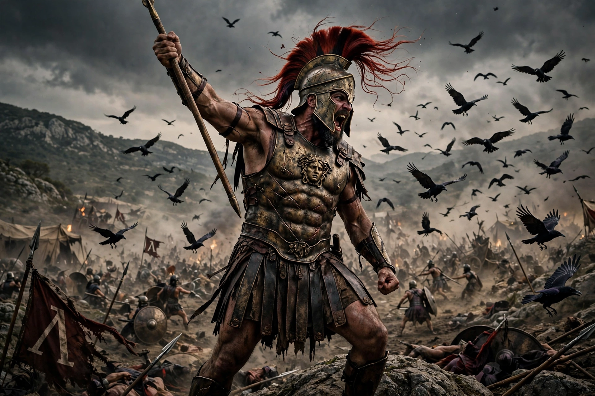

From Wikipedia, the free encyclopedia
| Ares | |
|---|---|
| Affiliation | Greek mythology; god of war — its violence and chaos |
| Parents | Zeus and Hera |
| Consort | Aphrodite (lover) |
| Children | Phobos and Deimos (Fear and Panic); Eros in some accounts; Harmonia |
| Roman counterpart | Mars (with a very different character) |
| Symbols | Spear, helmet, dog, vulture |

Ares is the Greek god of war — specifically of war's violence, bloodshed and chaos, as against Athena's patronage of strategy and craft. Son of Zeus and Hera, he is attended by his sons Phobos (Fear) and Deimos (Panic) and the goddess Eris (Strife), and accompanied in the Iliad by the war-fury Enyo. The Greeks themselves held him at arm's length: he is the least worshipped and least liked of the Olympians in the literature, the embodiment of everything war does to those who suffer it.
The Iliad shows Ares fighting for Troy, screaming like nine or ten thousand men, and being wounded by the mortal Diomedes (guided by Athena) — whereupon he flees to Olympus to complain to Zeus, who rebukes him as the most hateful of gods and has him healed, so that he may complain again. The Odyssey sings the comic counterweight: Ares's adultery with Aphrodite, trapped in flagrante by her husband Hephaestus's invisible net and displayed to the laughing gods. Other tales put him in a bronze jar for thirteen months, imprisoned by the Aloadae giants until Hermes freed him, and make him the father — by various mothers — of the Amazons' queen Penthesilea, of Harmonia, and of the dragon slain by Cadmus at Thebes. His trial for killing Poseidon's son gave Athens's Areopagus ("Ares's hill") its name.
Rome's Mars, though identified with Ares, is nearly his opposite in dignity: father of Romulus, guardian of soldiers and farmers, second only to Jupiter. The Greek Ares had few temples (Thrace, his mythic home, was barbarous to Greek ears) and little cult; his lasting importance is literary and psychological — the name we give to the part of war that loves war. The planet Mars, the month of March, and Tuesday in the Romance languages carry his Roman name.
Greek mythology · Hera · Zeus · Hephaestus · Hermes